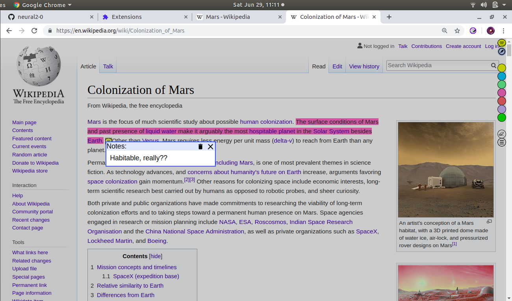
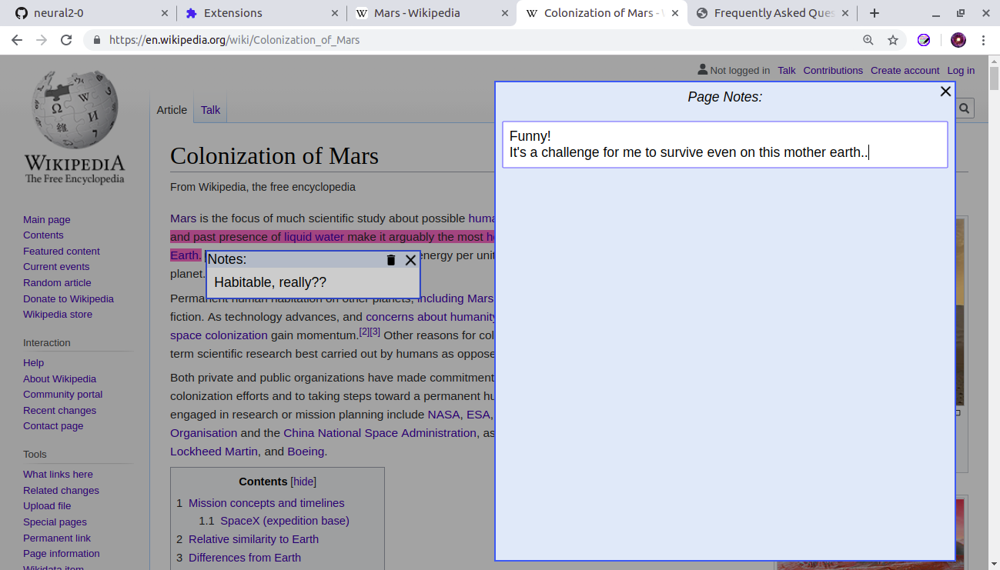
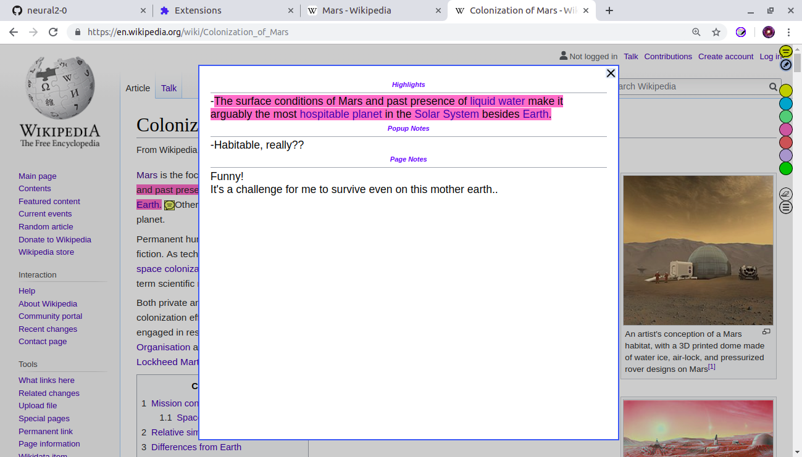
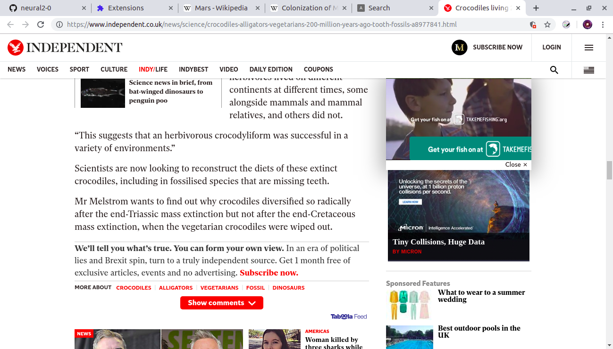
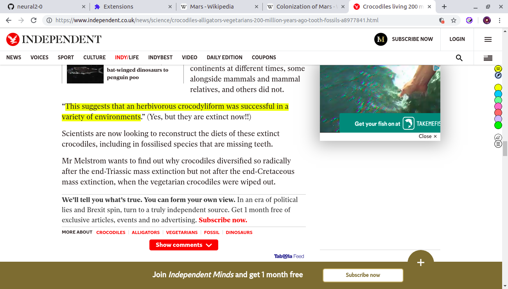
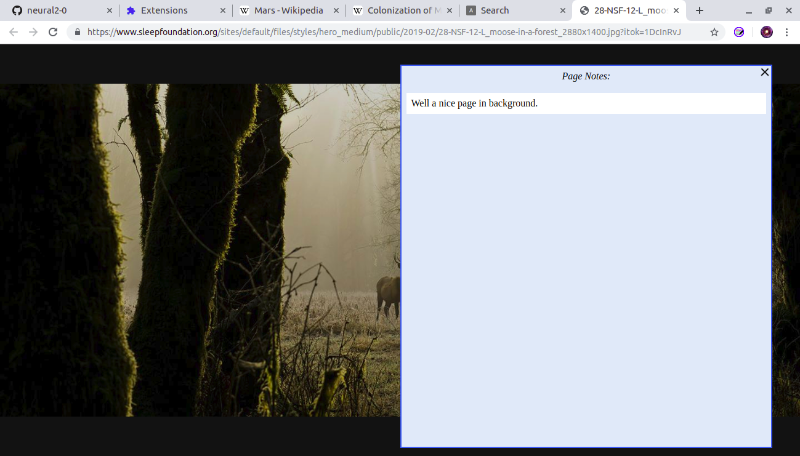

Annotation capabilities for extension: Annotate web pages/CONTEXTOne can highlight any text and can also add popup notes anywhere in the text. Page level notes could also be added. Page level notes does not modify html of the page, thus if only page notes are added, and underlying html page changes then it will be reflected.  For a given page one could check out the summary of all annotations. This is shown by clicking on the last button: "List annotations"  Further, one can edit the html page directly as shown below. Below is the original page and next image shows the annotation.  After highlight some text has been directly added. Please note that, if the text added is not highlighted then it won't be shown in the annotation list. Also notice that page action (extension button) color changed from Grey to Blue. Grey indicates that the page has not been annotated in anyway, while Blue indicates that some annotation has been done on it.  One can search their annotation. If preffered, they can also choose to search the entire content of the pages which has been annotated. Please note that, if a page only has page notes then one can not search the contents for that page.  If there is no text on a page (say just an image), one can add page notes to it.  |